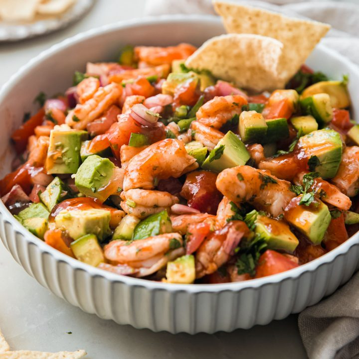

Shrimp Cocktail

Description
Mexican Shrimp Cocktail (Coctel de Camarones) offers an enticing variation of Shrimp Cocktail that uses tender shrimp, fresh tomato, cucumber, avocado, red onion and cilantro mixed into a spicy tomato-based sauce.
Ingredients
- Shrimp
- Fresh Lemons
- Black Peppercorns
- Fresh Cilantro
- Tomatoes
- Cucumber
- Red Onion
- Tomato Juice
- Ketchup
- Lime Juice
- Hot Sauce
- Fresh Avocado
- Salt and Pepper
- Tortilla Chips
Steps
- With kitchen shears, cut through shells along the backs of the shrimp lengthwise, just deep enough to expose veins. Remove veins with the tip of a pairing knife.
- In a medium bowl, prepare an ice bath for shrimp.
- To a medium pot add 2 quarts water, lemon wedges (squeeze juice out into pot as well as adding wedges), peppercorns, kosher salt and reserved cilantro stems; bring to boil over medium-high heat. Add shrimp and cover; remove from heat and let stand 3 minutes, until just cooked through. Transfer with slotted spoon to ice bath. Let shrimp stand in ice bath 3 minutes; remove and peel shrimp including tails.
- Meanwhile in a medium bowl combine tomatoes, cucumber, red onion, vegetable juice, Worcestershire sauce, lemon juice, ketchup, lime juice, water and hot sauce. Add cooked, peeled shrimp and stir to combine; cover and refrigerate for at least 30 minutes and up to 24 hours.
- When ready to serve, remove shrimp cocktail from refrigerator and let stand for 10 minutes at room temperature. Stir in avocado and cilantro; season to taste with salt and pepper. Serve in 4 individual cocktail glasses or goblets with tortilla chips and lime wedges if desired.
Home